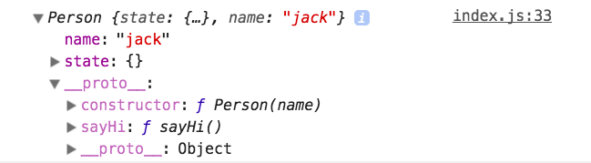
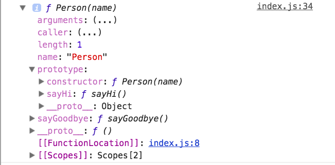
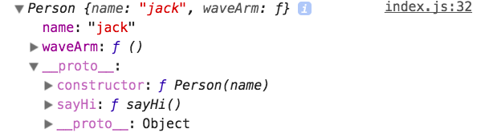

<!DOCTYPE html>
<html lang="en">

<!-- Head tag -->
<head>
    <meta charset="utf-8">
    <meta http-equiv="X-UA-Compatible" content="IE=edge">
    <meta name="google-site-verification" content="xBT4GhYoi5qRD5tr338pgPM5OWHHIDR6mNg1a3euekI" />
    <meta name="viewport" content="width=device-width, initial-scale=1">
    <meta name="description" content="">
    <meta name="keyword"  content="">
    <link rel="shortcut icon" href="/img/favicon.ico">

    <title>
        
          JS-class - Joel的博客 | Joel&#39;s Blog
        
    </title>

    <link rel="canonical" href="http://joelrh.xyz/2018/02/22/JS-class/">

    <!-- Bootstrap Core CSS -->
    <link rel="stylesheet" href="/css/bootstrap.min.css">

    <!-- Custom CSS -->
    <link rel="stylesheet" href="/css/hux-blog.min.css">

    <!-- Pygments Highlight CSS -->
    <link rel="stylesheet" href="/css/highlight.css">

    <!-- Custom Fonts -->
    <!-- <link href="https://maxcdn.bootstrapcdn.com/font-awesome/4.3.0/css/font-awesome.min.css" rel="stylesheet" type="text/css"> -->
    <!-- Hux change font-awesome CDN to qiniu -->
    <link href="https://cdn.staticfile.org/font-awesome/4.5.0/css/font-awesome.min.css" rel="stylesheet" type="text/css">


    <!-- Hux Delete, sad but pending in China
    <link href='http://fonts.googleapis.com/css?family=Lora:400,700,400italic,700italic' rel='stylesheet' type='text/css'>
    <link href='http://fonts.googleapis.com/css?family=Open+Sans:300italic,400italic,600italic,700italic,800italic,400,300,600,700,800' rel='stylesheet' type='text/
    css'>
    -->


    <!-- HTML5 Shim and Respond.js IE8 support of HTML5 elements and media queries -->
    <!-- WARNING: Respond.js doesn't work if you view the page via file:// -->
    <!--[if lt IE 9]>
        <script src="https://oss.maxcdn.com/libs/html5shiv/3.7.0/html5shiv.js"></script>
        <script src="https://oss.maxcdn.com/libs/respond.js/1.4.2/respond.min.js"></script>
    <![endif]-->

    <!-- ga & ba script hoook -->
    <script></script>
</head>


<!-- hack iOS CSS :active style -->
<body ontouchstart="">

    <!-- Navigation -->
<nav class="navbar navbar-default navbar-custom navbar-fixed-top">
    <div class="container-fluid">
        <!-- Brand and toggle get grouped for better mobile display -->
        <div class="navbar-header page-scroll">
            <button type="button" class="navbar-toggle">
                <span class="sr-only">Toggle navigation</span>
                <span class="icon-bar"></span>
                <span class="icon-bar"></span>
                <span class="icon-bar"></span>
            </button>
            <a class="navbar-brand" href="/">Joel&#39;s Blog</a>
        </div>

        <!-- Collect the nav links, forms, and other content for toggling -->
        <!-- Known Issue, found by Hux:
            <nav>'s height woule be hold on by its content.
            so, when navbar scale out, the <nav> will cover tags.
            also mask any touch event of tags, unfortunately.
        -->
        <div id="huxblog_navbar">
            <div class="navbar-collapse">
                <ul class="nav navbar-nav navbar-right">
                    <li>
                        <a href="/">Home</a>
                    </li>

                    

                        
                    

                        
                        <li>
                            <a href="/about/">About</a>
                        </li>
                        
                    

                        
                        <li>
                            <a href="/archives/">Archives</a>
                        </li>
                        
                    

                        
                        <li>
                            <a href="/tags/">Tags</a>
                        </li>
                        
                    
                    
                </ul>
            </div>
        </div>
        <!-- /.navbar-collapse -->
    </div>
    <!-- /.container -->
</nav>
<script>
    // Drop Bootstarp low-performance Navbar
    // Use customize navbar with high-quality material design animation
    // in high-perf jank-free CSS3 implementation
    var $body   = document.body;
    var $toggle = document.querySelector('.navbar-toggle');
    var $navbar = document.querySelector('#huxblog_navbar');
    var $collapse = document.querySelector('.navbar-collapse');

    $toggle.addEventListener('click', handleMagic)
    function handleMagic(e){
        if ($navbar.className.indexOf('in') > 0) {
        // CLOSE
            $navbar.className = " ";
            // wait until animation end.
            setTimeout(function(){
                // prevent frequently toggle
                if($navbar.className.indexOf('in') < 0) {
                    $collapse.style.height = "0px"
                }
            },400)
        }else{
        // OPEN
            $collapse.style.height = "auto"
            $navbar.className += " in";
        }
    }
</script>


    <!-- Main Content -->
    
<!-- Image to hack wechat -->
<!--  -->
<!--  -->

<!-- Post Header -->
<style type="text/css">
    header.intro-header{
        background-image: url('/img/home-bg.jpg')
    }
</style>
<header class="intro-header" >
    <div class="container">
        <div class="row">
            <div class="col-lg-8 col-lg-offset-2 col-md-10 col-md-offset-1">
                <div class="post-heading">
                    <div class="tags">
                        
                          <a class="tag" href="/tags/#JS 对象 class·" title="JS 对象 class·">JS 对象 class·</a>
                        
                    </div>
                    <h1>JS-class</h1>
                    <h2 class="subheading"></h2>
                    <span class="meta">
                        Posted by Joel on
                        February 22,2018
                    </span>
                </div>
            </div>
        </div>
    </div>
</header>

<!-- Post Content -->
<article>
    <div class="container">
        <div class="row">

    <!-- Post Container -->
            <div class="
                col-lg-8 col-lg-offset-2
                col-md-10 col-md-offset-1
                post-container">

                <p>本文探究ES6<code>class</code>语法糖的一些行为及babel实现。</p>
<p>PS：关于ES5继承的细节不在本文讨论范围</p>
<p>PPS：最好有ES5的面向对象知识</p>
<h3 id="what-the-hell-is-class"><a href="#what-the-hell-is-class" class="headerlink" title="what the hell is class"></a>what the hell is class</h3><p><code>class</code>是一个语法糖，好不好吃就要看各位的口味了，毕竟甲之蜜糖乙之砒霜。</p>
<p>既然是语法糖，那么就可以用现有的语言特性实现它（就是ES5的原型式继承），本文中我们直接分析babel编译出的ES5代码。</p>
<h3 id="坠简单滴例子"><a href="#坠简单滴例子" class="headerlink" title="坠简单滴例子"></a>坠简单滴例子</h3><figure class="highlight js"><table><tr><td class="gutter"><pre><span class="line">1</span><br><span class="line">2</span><br><span class="line">3</span><br><span class="line">4</span><br><span class="line">5</span><br><span class="line">6</span><br><span class="line">7</span><br><span class="line">8</span><br><span class="line">9</span><br><span class="line">10</span><br><span class="line">11</span><br><span class="line">12</span><br><span class="line">13</span><br></pre></td><td class="code"><pre><span class="line"><span class="class"><span class="keyword">class</span> <span class="title">Person</span> </span>&#123;</span><br><span class="line">    <span class="keyword">constructor</span>(name) &#123;</span><br><span class="line">        <span class="keyword">this</span>.name = name</span><br><span class="line">    &#125;</span><br><span class="line"></span><br><span class="line">    sayHi() &#123;</span><br><span class="line">        <span class="built_in">console</span>.log(<span class="string">'Hi, this is '</span>, <span class="keyword">this</span>.name)</span><br><span class="line">    &#125;</span><br><span class="line"></span><br><span class="line">    <span class="keyword">static</span> sayGoodbye() &#123;</span><br><span class="line">        <span class="built_in">console</span>.log(<span class="string">'goodbye'</span>)</span><br><span class="line">    &#125;</span><br><span class="line">&#125;</span><br></pre></td></tr></table></figure>
<p>额，经过babel编译出来好大一坨玩意儿。</p>
<figure class="highlight js"><table><tr><td class="gutter"><pre><span class="line">1</span><br><span class="line">2</span><br><span class="line">3</span><br><span class="line">4</span><br><span class="line">5</span><br><span class="line">6</span><br><span class="line">7</span><br><span class="line">8</span><br><span class="line">9</span><br><span class="line">10</span><br><span class="line">11</span><br><span class="line">12</span><br><span class="line">13</span><br><span class="line">14</span><br><span class="line">15</span><br><span class="line">16</span><br><span class="line">17</span><br><span class="line">18</span><br><span class="line">19</span><br><span class="line">20</span><br><span class="line">21</span><br><span class="line">22</span><br><span class="line">23</span><br><span class="line">24</span><br><span class="line">25</span><br><span class="line">26</span><br><span class="line">27</span><br><span class="line">28</span><br><span class="line">29</span><br><span class="line">30</span><br><span class="line">31</span><br><span class="line">32</span><br><span class="line">33</span><br><span class="line">34</span><br><span class="line">35</span><br><span class="line">36</span><br><span class="line">37</span><br><span class="line">38</span><br><span class="line">39</span><br><span class="line">40</span><br><span class="line">41</span><br><span class="line">42</span><br><span class="line">43</span><br><span class="line">44</span><br><span class="line">45</span><br><span class="line">46</span><br><span class="line">47</span><br></pre></td><td class="code"><pre><span class="line"><span class="meta">'use strict'</span>;</span><br><span class="line"></span><br><span class="line"><span class="keyword">var</span> _createClass = <span class="function"><span class="keyword">function</span> (<span class="params"></span>) </span>&#123;</span><br><span class="line">    <span class="function"><span class="keyword">function</span> <span class="title">defineProperties</span>(<span class="params">target, props</span>) </span>&#123;</span><br><span class="line">        <span class="keyword">for</span> (<span class="keyword">var</span> i = <span class="number">0</span>; i &lt; props.length; i++) &#123;</span><br><span class="line">            <span class="keyword">var</span> descriptor = props[i];</span><br><span class="line">            descriptor.enumerable = descriptor.enumerable || <span class="literal">false</span>;</span><br><span class="line">            descriptor.configurable = <span class="literal">true</span>;</span><br><span class="line">            <span class="keyword">if</span> (<span class="string">"value"</span> <span class="keyword">in</span> descriptor) descriptor.writable = <span class="literal">true</span>;</span><br><span class="line">            <span class="built_in">Object</span>.defineProperty(target, descriptor.key, descriptor);</span><br><span class="line">        &#125;</span><br><span class="line">    &#125;</span><br><span class="line"></span><br><span class="line">    <span class="keyword">return</span> <span class="function"><span class="keyword">function</span> (<span class="params">Constructor, protoProps, staticProps</span>) </span>&#123;</span><br><span class="line">        <span class="keyword">if</span> (protoProps) defineProperties(Constructor.prototype, protoProps);</span><br><span class="line">        <span class="keyword">if</span> (staticProps) defineProperties(Constructor, staticProps);</span><br><span class="line">        <span class="keyword">return</span> Constructor;</span><br><span class="line">    &#125;;</span><br><span class="line">&#125;();</span><br><span class="line"></span><br><span class="line"><span class="function"><span class="keyword">function</span> _classCallCheck(<span class="params">instance, Constructor</span>) </span>&#123;</span><br><span class="line">    <span class="keyword">if</span> (!(instance <span class="keyword">instanceof</span> Constructor)) &#123;</span><br><span class="line">        <span class="keyword">throw</span> <span class="keyword">new</span> <span class="built_in">TypeError</span>(<span class="string">"Cannot call a class as a function"</span>);</span><br><span class="line">    &#125;</span><br><span class="line">&#125;</span><br><span class="line"></span><br><span class="line"><span class="keyword">var</span> Person = <span class="function"><span class="keyword">function</span> (<span class="params"></span>) </span>&#123;</span><br><span class="line">    <span class="function"><span class="keyword">function</span> <span class="title">Person</span>(<span class="params">name</span>) </span>&#123;</span><br><span class="line">        _classCallCheck(<span class="keyword">this</span>, Person);</span><br><span class="line"></span><br><span class="line">        <span class="keyword">this</span>.name = name;</span><br><span class="line">    &#125;</span><br><span class="line"></span><br><span class="line">    _createClass(Person, [&#123;</span><br><span class="line">        key: <span class="string">'sayHi'</span>,</span><br><span class="line">        value: <span class="function"><span class="keyword">function</span> <span class="title">sayHi</span>(<span class="params"></span>) </span>&#123;</span><br><span class="line">            <span class="built_in">console</span>.log(<span class="string">'Hi, this is '</span>, <span class="keyword">this</span>.name);</span><br><span class="line">        &#125;</span><br><span class="line">    &#125;], [&#123;</span><br><span class="line">        key: <span class="string">'sayGoodbye'</span>,</span><br><span class="line">        value: <span class="function"><span class="keyword">function</span> <span class="title">sayGoodbye</span>(<span class="params"></span>) </span>&#123;</span><br><span class="line">            <span class="built_in">console</span>.log(<span class="string">'goodbye'</span>);</span><br><span class="line">        &#125;</span><br><span class="line">    &#125;]);</span><br><span class="line"></span><br><span class="line">    <span class="keyword">return</span> Person;</span><br><span class="line">&#125;();</span><br></pre></td></tr></table></figure>
<p>太长不看右上角！</p>
<p>别急啊大爷，我带你一点点看。</p>
<p>首先最下面<code>Person</code>的变量就是是我们的<code>Person</code>类，它其实是一个由IIFE返回的函数。</p>
<figure class="highlight js"><table><tr><td class="gutter"><pre><span class="line">1</span><br><span class="line">2</span><br><span class="line">3</span><br><span class="line">4</span><br><span class="line">5</span><br></pre></td><td class="code"><pre><span class="line"><span class="function"><span class="keyword">function</span> <span class="title">Person</span>(<span class="params">name</span>) </span>&#123;</span><br><span class="line">        _classCallCheck(<span class="keyword">this</span>, Person);</span><br><span class="line"></span><br><span class="line">        <span class="keyword">this</span>.name = name;</span><br><span class="line">&#125;</span><br></pre></td></tr></table></figure>
<p>很眼熟吧，这个函数其实就是我们在ES5中的构造函数。</p>
<p>就是构造函数里多了点什么东西-&gt;<code>_classCallCheck</code>。</p>
<h4 id="为什么要有-classCallCheck"><a href="#为什么要有-classCallCheck" class="headerlink" title="为什么要有_classCallCheck"></a>为什么要有<code>_classCallCheck</code></h4><p>ES5中构造函数就是一个普通的函数，因此可以直接调用，只不过与通过<code>new</code>关键字调用有不同的行为，而ES标准要求<code>class</code>只能通过<code>new</code>调用，因此需要一个验证机制，在不当调用时报错。</p>
<figure class="highlight js"><table><tr><td class="gutter"><pre><span class="line">1</span><br><span class="line">2</span><br><span class="line">3</span><br><span class="line">4</span><br><span class="line">5</span><br><span class="line">6</span><br></pre></td><td class="code"><pre><span class="line"><span class="comment">// _classCallCheck</span></span><br><span class="line"><span class="function"><span class="keyword">function</span> _classCallCheck(<span class="params">instance, Constructor</span>) </span>&#123;</span><br><span class="line">    <span class="keyword">if</span> (!(instance <span class="keyword">instanceof</span> Constructor)) &#123;</span><br><span class="line">        <span class="keyword">throw</span> <span class="keyword">new</span> <span class="built_in">TypeError</span>(<span class="string">"Cannot call a class as a function"</span>);</span><br><span class="line">    &#125;</span><br><span class="line">&#125;</span><br></pre></td></tr></table></figure>
<p><code>_classCallCheck</code>函数很简单，接收两个参数，然后用<code>instanceof</code>检测<code>instance</code>是不是<code>Constructor</code>的实例，如果不是就报错。</p>
<p>当通过<code>new</code>调用时，<code>Person</code>内部的<code>this</code>为新创建的实例（也就是说<code>this</code>的<code>__proto__</code>已经指向了<code>Person</code>的<code>prototype</code>），此时能过通过检测。</p>
<p>当<code>Person</code>作为函数调用时就会报错。</p>
<blockquote>
<p>可以了解一下ES6的<code>new.target</code></p>
</blockquote>
<h4 id="实例的静态属性"><a href="#实例的静态属性" class="headerlink" title="实例的静态属性"></a>实例的静态属性</h4><p>常写<code>React</code>的童鞋应该很熟悉这种写法</p>
<figure class="highlight js"><table><tr><td class="gutter"><pre><span class="line">1</span><br><span class="line">2</span><br><span class="line">3</span><br><span class="line">4</span><br><span class="line">5</span><br></pre></td><td class="code"><pre><span class="line"><span class="class"><span class="keyword">class</span> <span class="title">App</span> <span class="keyword">extends</span> <span class="title">PureComponent</span> </span>&#123;</span><br><span class="line">    state = &#123;</span><br><span class="line">        ...</span><br><span class="line">    &#125;</span><br><span class="line">&#125;</span><br></pre></td></tr></table></figure>
<p>那么这种写法与我们在<code>constructor</code>中定义的属性有什么区别吗？</p>
<p>我们将代码修改如下，注释处是修改的地方。</p>
<figure class="highlight js"><table><tr><td class="gutter"><pre><span class="line">1</span><br><span class="line">2</span><br><span class="line">3</span><br><span class="line">4</span><br><span class="line">5</span><br><span class="line">6</span><br><span class="line">7</span><br><span class="line">8</span><br><span class="line">9</span><br><span class="line">10</span><br><span class="line">11</span><br></pre></td><td class="code"><pre><span class="line"><span class="class"><span class="keyword">class</span> <span class="title">Person</span> </span>&#123;</span><br><span class="line">    <span class="comment">// 静态实例属性</span></span><br><span class="line">    state = &#123;&#125;</span><br><span class="line"></span><br><span class="line">    <span class="keyword">constructor</span>(name) &#123;</span><br><span class="line">        <span class="keyword">this</span>.name = name</span><br><span class="line">    &#125;</span><br><span class="line"></span><br><span class="line">    ...</span><br><span class="line"></span><br><span class="line">&#125;</span><br></pre></td></tr></table></figure>
<p>打包出来的代码如下</p>
<figure class="highlight js"><table><tr><td class="gutter"><pre><span class="line">1</span><br><span class="line">2</span><br><span class="line">3</span><br><span class="line">4</span><br><span class="line">5</span><br><span class="line">6</span><br><span class="line">7</span><br><span class="line">8</span><br></pre></td><td class="code"><pre><span class="line"><span class="function"><span class="keyword">function</span> <span class="title">Person</span>(<span class="params">name</span>) </span>&#123;</span><br><span class="line">        _classCallCheck(<span class="keyword">this</span>, Person);</span><br><span class="line"></span><br><span class="line">        <span class="comment">// 静态实例属性</span></span><br><span class="line">        <span class="keyword">this</span>.state = &#123;&#125;;</span><br><span class="line"></span><br><span class="line">        <span class="keyword">this</span>.name = name;</span><br><span class="line">&#125;</span><br></pre></td></tr></table></figure>
<p></p>
<p>emmmm，好像并没有什么卵区别。</p>
<p>其实<font color="#fd4c9d">确实没有什么卵区别</font>。</p>
<p>按我的理解，所谓的静态实例属性，就是指不能在新建对象时指定值的属性，因而称为静态。</p>
<p>那么既然是实例属性，那么它必然是定义在实例上，并没有什么魔法。</p>
<p>其实这也是有些人不喜欢语法糖的原因：遮盖了实现的细节，容易让人产生疑惑。</p>
<h4 id="createClass是什么鬼？？？"><a href="#createClass是什么鬼？？？" class="headerlink" title="_createClass是什么鬼？？？"></a>_createClass是什么鬼？？？</h4><p>在ES5中，我们将属性放在对象中，将方法放在原型中。</p>
<p>也就是定义了构造函数后再去修改构造函数的<code>prototype</code>。</p>
<p>但是这样写其实很烦人。。。</p>
<p>上面我们看到<code>Person</code>函数就是定义好的构造函数，而<code>_createClass</code>处理构造函数，向原型和构造函数本身添加方法：</p>
<ul>
<li>实例方法：向<code>Person.prototype</code>添加<code>sayHi</code>方法。</li>
<li>静态方法：向<code>Person</code>函数添加<code>sayGoodbye</code>方法，称为静态方法。</li>
</ul>
<blockquote>
<p>看不懂的去补JS基础。。。</p>
</blockquote>
<figure class="highlight js"><table><tr><td class="gutter"><pre><span class="line">1</span><br><span class="line">2</span><br><span class="line">3</span><br><span class="line">4</span><br><span class="line">5</span><br><span class="line">6</span><br></pre></td><td class="code"><pre><span class="line"><span class="comment">// _createClass</span></span><br><span class="line"><span class="function"><span class="keyword">function</span> (<span class="params">Constructor, protoProps, staticProps</span>) </span>&#123;</span><br><span class="line">        <span class="keyword">if</span> (protoProps) defineProperties(Constructor.prototype, protoProps);</span><br><span class="line">        <span class="keyword">if</span> (staticProps) defineProperties(Constructor, staticProps);</span><br><span class="line">        <span class="keyword">return</span> Constructor;</span><br><span class="line">&#125;;</span><br></pre></td></tr></table></figure>
<p>先看<code>_createClass</code>的签名</p>
<ul>
<li><code>Constructor</code>：就是我们的构造函数<code>Person</code></li>
<li><code>protoProps</code>：是要放到原型上的方法（<code>sayHi</code>）</li>
<li><code>staticProps</code>是要放到<code>Person</code>函数的静态方法(<code>sayGoodbye</code>)。</li>
</ul>
<blockquote>
<p>类声明中，<code>static</code>关键字表示该方法是类的静态方法。</p>
</blockquote>
<p><code>_createClass</code>接着用<code>defineProperties</code>函数分别处理了<code>Person</code>和它的<code>prototype</code>。</p>
<p>也就是ES5中需要手动处理的步骤。</p>
<p>再来看<code>_createClass</code>是怎么调用的</p>
<figure class="highlight js"><table><tr><td class="gutter"><pre><span class="line">1</span><br><span class="line">2</span><br><span class="line">3</span><br><span class="line">4</span><br><span class="line">5</span><br><span class="line">6</span><br><span class="line">7</span><br><span class="line">8</span><br><span class="line">9</span><br><span class="line">10</span><br><span class="line">11</span><br></pre></td><td class="code"><pre><span class="line">_createClass(Person, [&#123;</span><br><span class="line">        key: <span class="string">'sayHi'</span>,</span><br><span class="line">        value: <span class="function"><span class="keyword">function</span> <span class="title">sayHi</span>(<span class="params"></span>) </span>&#123;</span><br><span class="line">            <span class="built_in">console</span>.log(<span class="string">'Hi, this is '</span>, <span class="keyword">this</span>.name);</span><br><span class="line">        &#125;</span><br><span class="line">    &#125;], [&#123;</span><br><span class="line">        key: <span class="string">'sayGoodbye'</span>,</span><br><span class="line">        value: <span class="function"><span class="keyword">function</span> <span class="title">sayGoodbye</span>(<span class="params"></span>) </span>&#123;</span><br><span class="line">            <span class="built_in">console</span>.log(<span class="string">'goodbye'</span>);</span><br><span class="line">        &#125;</span><br><span class="line">&#125;]);</span><br></pre></td></tr></table></figure>
<p>可以发现，这些方法已经不是函数了，而是一个个属性描述符对象，这些对象被交给了<code>defineProperties</code>函数处理。</p>
<p>这又是为什么呢？</p>
<p><code>defineProperties</code>用于写入属性，为什么要有这一步呢？为什么不能直接把方法写入要搞的这么复杂呢？</p>
<p>其实还是ES标准的原因。</p>
<p>ES规定<code>class</code>内部定义的所有方法都是不可枚举的，也就是说<code>Object.keys(Person.prototype)</code>不会返回<code>sayHi</code>方法。</p>
<p><code>defineProperties</code>用于修改属性描述符，并写入目标对象。</p>
<p>这样就与标准的规定一致了。</p>
<p>至此我们的<code>Person</code>类已经被处理好了。</p>
<p>实例化一个类试试。</p>
<figure class="highlight js"><table><tr><td class="gutter"><pre><span class="line">1</span><br><span class="line">2</span><br><span class="line">3</span><br></pre></td><td class="code"><pre><span class="line"><span class="keyword">const</span> jack = <span class="keyword">new</span> Person(<span class="string">'jack'</span>)</span><br><span class="line"></span><br><span class="line"><span class="built_in">console</span>.log(jack)</span><br></pre></td></tr></table></figure>
<p></p>
<p>确实如我们预想的一样。</p>
<p>再看看<code>Person</code>类</p>
<figure class="highlight js"><table><tr><td class="gutter"><pre><span class="line">1</span><br></pre></td><td class="code"><pre><span class="line"><span class="built_in">console</span>.dir(Person)</span><br></pre></td></tr></table></figure>
<p></p>
<p>可以看到<code>Person</code>确实是一个函数，<code>sayGoodbye</code>确实是该函数的一个属性。</p>
<h4 id="What’s-more"><a href="#What’s-more" class="headerlink" title="What’s more?"></a>What’s more?</h4><p>为了解决<code>this</code>指向丢失的问题，我们常常采用下面这种写法，但是很多人并不知道到底发生了什么。。。</p>
<blockquote>
<p>其实写这文章的原因就是群里有人提问实例静态属性和<code>constructor</code>中初始化的属性的区别。。。万恶的语法糖！</p>
</blockquote>
<figure class="highlight js"><table><tr><td class="gutter"><pre><span class="line">1</span><br><span class="line">2</span><br><span class="line">3</span><br><span class="line">4</span><br><span class="line">5</span><br><span class="line">6</span><br><span class="line">7</span><br><span class="line">8</span><br><span class="line">9</span><br><span class="line">10</span><br><span class="line">11</span><br><span class="line">12</span><br><span class="line">13</span><br></pre></td><td class="code"><pre><span class="line"><span class="class"><span class="keyword">class</span> <span class="title">Person</span> </span>&#123;</span><br><span class="line">    <span class="keyword">constructor</span>(name) &#123;</span><br><span class="line">        <span class="keyword">this</span>.name = name</span><br><span class="line">    &#125;</span><br><span class="line">    </span><br><span class="line">    sayHi() &#123;</span><br><span class="line">        <span class="built_in">console</span>.log(<span class="string">'Hi, this is '</span>, <span class="keyword">this</span>.name)</span><br><span class="line">    &#125;</span><br><span class="line"></span><br><span class="line">    waveArm = <span class="function"><span class="params">()</span> =&gt;</span> &#123;</span><br><span class="line">        <span class="built_in">console</span>.log(<span class="keyword">this</span>.name, <span class="string">'is waving arm'</span>)</span><br><span class="line">    &#125;</span><br><span class="line">&#125;</span><br></pre></td></tr></table></figure>
<p>经过了上面的分析，我们可以看出来，这其实就是一个静态实例属性，而<code>this</code>指向问题是用箭头函数解决的。</p>
<p>下面是babel编译出的代码</p>
<figure class="highlight js"><table><tr><td class="gutter"><pre><span class="line">1</span><br><span class="line">2</span><br><span class="line">3</span><br><span class="line">4</span><br><span class="line">5</span><br><span class="line">6</span><br><span class="line">7</span><br><span class="line">8</span><br><span class="line">9</span><br><span class="line">10</span><br><span class="line">11</span><br></pre></td><td class="code"><pre><span class="line"><span class="function"><span class="keyword">function</span> <span class="title">Person</span>(<span class="params">name</span>) </span>&#123;</span><br><span class="line">        <span class="keyword">var</span> _this = <span class="keyword">this</span>;</span><br><span class="line"></span><br><span class="line">        _classCallCheck(<span class="keyword">this</span>, Person);</span><br><span class="line"></span><br><span class="line">        <span class="keyword">this</span>.waveArm = <span class="function"><span class="keyword">function</span> (<span class="params"></span>) </span>&#123;</span><br><span class="line">            <span class="built_in">console</span>.log(_this.name, <span class="string">'is waving arm'</span>);</span><br><span class="line">        &#125;;</span><br><span class="line"></span><br><span class="line">        <span class="keyword">this</span>.name = name;</span><br><span class="line">&#125;</span><br></pre></td></tr></table></figure>
<p>下面是实例的属性</p>
<p></p>
<p>可以看到，确实如我们预料的一样，<code>waveArm</code>方法并不在原型中，而是作为实例的属性。</p>
<p>只不过babel用闭包实现了箭头函数的行为。</p>
<h3 id="一点看法"><a href="#一点看法" class="headerlink" title="一点看法"></a>一点看法</h3><p>个人还是挺喜欢这个语法糖的，毕竟少写很多代码。。。</p>
<p>其实实现继承并不一定要用<code>class</code>或者ES5那一套做法，使用<code>Object.create</code>一样可以做到，而且更加简洁。。。</p>
<p>不过都得对原型实现面向对象这一套东西有深入了解。</p>
<p>毕竟万变不离其宗。</p>
<p>再说了，函数式大法好！要啥面相对象（手动滑稽</p>
<p>下一篇文章讲<code>extend</code>关键字干了什么。。。</p>
<hr>
<p>EOF</p>


                <hr>

                

                <ul class="pager">
                    <!-- 定义临时变量过滤隐藏的page start -->
                    
                    
                    
                        
                            
                            
                        
                            
                            
                        
                            
                            
                        
                            
                                
                    
                    
                        
                            
                                
                    
                    <!-- 定义临时变量过滤隐藏的page end -->
                    
                        <li class="previous">
                            <a href="/2018/02/28/JS-extend/" data-toggle="tooltip" data-placement="top" title="从extend看JS继承">
                                Previous
                                <br>
                                <span>从extend看JS继承</span>
                            </a>
                        </li>
                    
                    
                        <li class="next">
                            <a href="/2018/02/22/JB-license-server/" data-toggle="tooltip" data-placement="top" title="JB全家桶本地license server">
                                Next Post
                                <br>
                                <span>JB全家桶本地license server</span>
                            </a>
                        </li>
                    
                </ul>

                

                
                <!-- disqus 评论框 start -->
                <div class="comment">
                    <div id="disqus_thread" class="disqus-thread"></div>
                </div>
                <!-- disqus 评论框 end -->
                

            </div>
    <!-- Side Catalog Container -->
        

    <!-- Sidebar Container -->

            <div class="
                col-lg-8 col-lg-offset-2
                col-md-10 col-md-offset-1
                sidebar-container">

                <!-- Featured Tags -->
                

                <!-- Friends Blog -->
                
                <hr>
                <h5>FRIENDS</h5>
                <ul class="list-inline">

                    
                </ul>
                
            </div>

        </div>
    </div>
</article>


<!-- disqus 公共JS代码 start (一个网页只需插入一次) -->
<script type="text/javascript">
    /* * * CONFIGURATION VARIABLES * * */
    var disqus_shortname = "joelrh-xyz";
    var disqus_identifier = "http://joelrh.xyz/2018/02/22/JS-class/";
    var disqus_url = "http://joelrh.xyz/2018/02/22/JS-class/";

    (function() {
        var dsq = document.createElement('script'); dsq.type = 'text/javascript'; dsq.async = true;
        dsq.src = '//' + disqus_shortname + '.disqus.com/embed.js';
        (document.getElementsByTagName('head')[0] || document.getElementsByTagName('body')[0]).appendChild(dsq);
    })();
</script>
<!-- disqus 公共JS代码 end -->


<!-- async load function -->
<script>
    function async(u, c) {
      var d = document, t = 'script',
          o = d.createElement(t),
          s = d.getElementsByTagName(t)[0];
      o.src = u;
      if (c) { o.addEventListener('load', function (e) { c(null, e); }, false); }
      s.parentNode.insertBefore(o, s);
    }
</script>
<!-- anchor-js, Doc:http://bryanbraun.github.io/anchorjs/ -->
<script>
    async("https://cdn.bootcss.com/anchor-js/1.1.1/anchor.min.js",function(){
        anchors.options = {
          visible: 'always',
          placement: 'right',
          icon: '#'
        };
        anchors.add().remove('.intro-header h1').remove('.subheading').remove('.sidebar-container h5');
    })
</script>
<style>
    /* place left on bigger screen */
    @media all and (min-width: 800px) {
        .anchorjs-link{
            position: absolute;
            left: -0.75em;
            font-size: 1.1em;
            margin-top : -0.1em;
        }
    }
</style>


    <!-- Footer -->
    <!-- Footer -->
<footer>
    <div class="container">
        <div class="row">
            <div class="col-lg-8 col-lg-offset-2 col-md-10 col-md-offset-1">
                <ul class="list-inline text-center">
                
                
                

                

                

                

                

                </ul>
                <p class="copyright text-muted">
                    Copyright &copy; Joel&#39;s Blog 2018 
                    <br>
                    Theme by <a href="http://huangxuan.me">Hux</a> 
                    <span style="display: inline-block; margin: 0 5px;">
                        <i class="fa fa-heart"></i>
                    </span> 
                    Ported by <a href="http://blog.kaijun.rocks">Kaijun</a> | 
                    <!-- <iframe
                        style="margin-left: 2px; margin-bottom:-5px;"
                        frameborder="0" scrolling="0" width="91px" height="20px"
                        src="https://ghbtns.com/github-btn.html?user=kaijun&repo=hexo-theme-huxblog&type=star&count=true" >
                    </iframe> -->
                    <a href="http://joelrh.xyz">Joel</a>
                </p>
            </div>
        </div>
    </div>
</footer>

<!-- jQuery -->
<script src="/js/jquery.min.js"></script>

<!-- Bootstrap Core JavaScript -->
<script src="/js/bootstrap.min.js"></script>

<!-- Custom Theme JavaScript -->
<script src="/js/hux-blog.min.js"></script>

<!-- 可爱的颜文字脚本 -->
<script>
    (() => {
        const faces = [
            '(。_。)',
            '(;´༎ຶД༎ຶ`)',
            '(°ー°〃)',
            '_(:з」∠)_',
            '_(•̀ω•́ 」∠)_',
            '(:3[▓▓]',
            '.._:(´_`」 ∠):_ ...',
            '(ーωー*＊)оΟ〇'
        ]
        const title = document.title
        const len = faces.length
        document.addEventListener('visibilitychange', () => {
            const face = faces[Math.floor(Math.random() * len)]
            if (document.visibilityState=='hidden') {
                document.title = `${face} ${title}`
            } else {
                setTimeout(() => document.title = title, 800)
                document.title = '．．．．．．'
            }
        })
    })()
</script>

<!-- 根据页面mathjax变量决定是否加载MathJax数学公式js -->


<!-- async load function -->
<script>
    function async(u, c) {
      var d = document, t = 'script',
          o = d.createElement(t),
          s = d.getElementsByTagName(t)[0];
      o.src = u;
      if (c) { o.addEventListener('load', function (e) { c(null, e); }, false); }
      s.parentNode.insertBefore(o, s);
    }
</script>

<!-- 
     Because of the native support for backtick-style fenced code blocks 
     right within the Markdown is landed in Github Pages, 
     From V1.6, There is no need for Highlight.js, 
     so Huxblog drops it officially.

     - https://github.com/blog/2100-github-pages-now-faster-and-simpler-with-jekyll-3-0  
     - https://help.github.com/articles/creating-and-highlighting-code-blocks/    
-->
<!--
    <script>
        async("http://cdn.bootcss.com/highlight.js/8.6/highlight.min.js", function(){
            hljs.initHighlightingOnLoad();
        })
    </script>
    <link href="http://cdn.bootcss.com/highlight.js/8.6/styles/github.min.css" rel="stylesheet">
-->


<!-- jquery.tagcloud.js -->
<script>
    // only load tagcloud.js in tag.html
    if($('#tag_cloud').length !== 0){
        async("http://joelrh.xyz/js/jquery.tagcloud.js",function(){
            $.fn.tagcloud.defaults = {
                //size: {start: 1, end: 1, unit: 'em'},
                color: {start: '#bbbbee', end: '#0085a1'},
            };
            $('#tag_cloud a').tagcloud();
        })
    }
</script>

<!--fastClick.js -->
<script>
    async("https://cdn.bootcss.com/fastclick/1.0.6/fastclick.min.js", function(){
        var $nav = document.querySelector("nav");
        if($nav) FastClick.attach($nav);
    })
</script>


<!-- Google Analytics -->


<!-- Baidu Tongji -->


<!-- Side Catalog -->


<!-- Image to hack wechat -->

<!-- Migrate from head to bottom, no longer block render and still work -->

</body>

</html>
